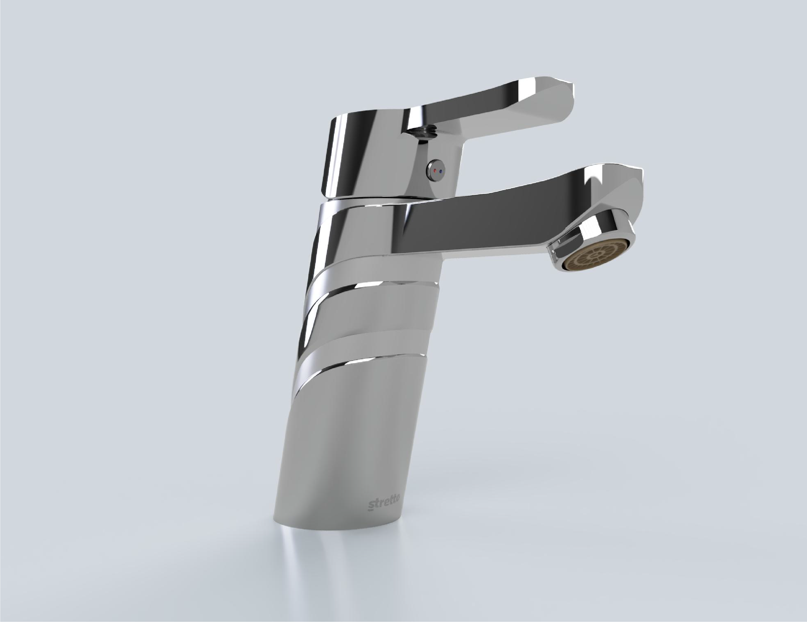

Grifola — Linea de Grifería Monomando para Lavamanos
3° Lugar Concurso Stretto
Proyecto Colaborativo (A. Ramírez, I. Valenzuela, C. Chamorro)
Desarrollo 3D Integral (Modelado CAD & Renderizado)
Fusion 360, Rhinoceros, V-Ray

El Brief & Concepto
Desarrollado en respuesta al concurso de la marca Stretto para concebir una propuesta innovadora de grifería dirigida a la clase emergente. El proyecto explora los conceptos de fluidez y oblicuidad, buscando transformar la grifería en una pieza de acento estético mediante transiciones orgánicas y caídas de agua naturales, optimizando el costo de producción.
Desarrollo 3D & Modelado NURBS
Mi responsabilidad en el equipo consistió en traducir la intención conceptual en una geometría tridimensional precisa. Se trabajó en Rhinoceros y Fusion 360 resolviendo la tangencia de superficies complejas, la ergonomía del accionador monomando y el desglose de planos técnicos con tolerancias para componentes internos de flujo.